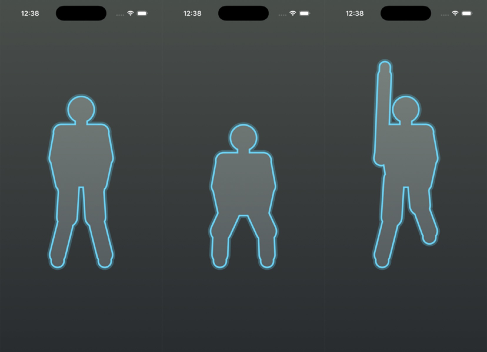
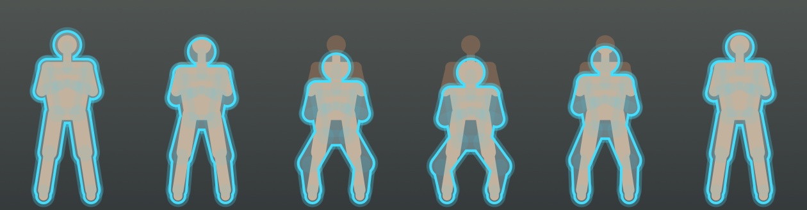
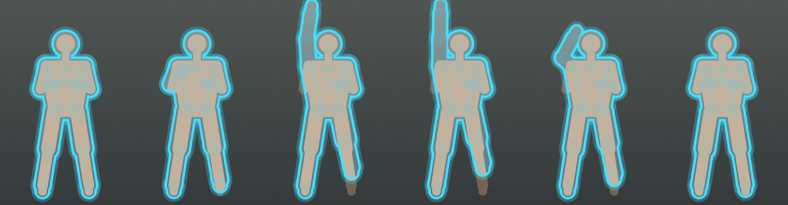
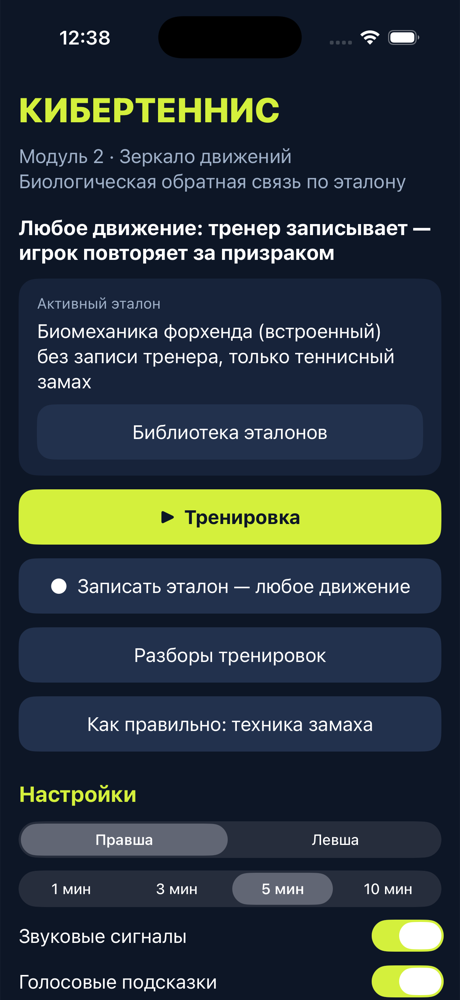

Зеркало, которое знает идеальное движение и показывает, как к нему прийти. Игрок видит себя и светящийся силуэт эталона тренера и повторяет за ним, а приложение подсказывает звуком и голосом.
Игрок стоит перед телефоном. На экране он сам и светящийся силуэт эталона. Совместился, услышал сигнал и повторяет за призраком. Приложение видит, где тело вышло за контур.
Тренер записывает сам, и это может быть любое движение.
Контур, звук и голос работают во время движения, а не после.
Оценка каждого повтора, динамика и главные ошибки.
Ганс Бергер записывает электрические ритмы мозга. Работа мозга впервые видна снаружи.
Пётр Анохин: результат действия возвращается в мозг и поправляет следующее. Позже кибернетика назовёт это обратной связью.
Николай Бернштейн: движением управляют сигналы обратной связи, задолго до появления кибернетики.
Датчик: мозг, пульс, мышца, камера.
Экран или звук, сразу, без задержки.
Человек видит, насколько он отклонился от цели.
Мозг подстраивает следующий повтор.
В Dr.Timing датчик — камера телефона, цель — эталон тренера, сигнал — светящийся контур, звук и голос. Цикл замыкается на каждом повторе.
Термообратная связь Грина: научиться согревать руки.
Тренинг SMR-ритма Стермана снижал приступы.
ЭМГ-обратная связь по Басмаджану: основа тренинга нервно-мышечного контроля.
HRV-биоуправление: дыхание в резонансном ритме сердца.
Почти вся история БОС — это медицина и психофизиология. Тренировочное поле осталось на обочине.
Технология выросла в лаборатории и клинике. До тренировочного поля она не дошла: ни как массовая практика, ни как привычный инструмент тренера.
исследований HRV-биоуправления в спорте нашёл обзор 2017 года; выборки от 1 до 30 человек.
исследований нейрофидбэка у спортсменов разобрал обзор 2023 года.
барьера по оценке специалистов: цена, нехватка времени, мало обученных кадров.
Вывод сделан по научным обзорам; опрос тренеров мы не проводили. Мы не утверждаем, что БОС в спорте не использует никто: есть работа с дыханием и ритмом сердца, нейрофидбэк у отдельных спортсменов, но это штучная практика.
«Не нашли» — по результатам нашего обзора литературы, не по полному исследованию рынка.
Хранит «внутренние модели» движения: предсказывает результат и сверяет его с реальностью.
Wolpert, Miall, Kawato, 1998
Дополнительная информация о выполнении, от тренера или от техники, повышает эффективность обучения движениям.
Sigrist et al., 2013 (обзор)
Звук и тактильный сигнал сверх зрительных подсказок улучшают обучение сложному движению.
Sigrist et al., 2014
Dr.Timing использует оба канала: контур эталона для глаз, сигнал и голос для слуха.
24 лучника уровня pre-elite, 16 мужчин и 8 женщин. Три группы: верная обратная связь, неверная, без неё. До и после: по 27 выстрелов, ЭЭГ с височных отведений.
Серый столбец — до, цветной — после. Схема направления изменений, не масштаб. Landers et al., Med Sci Sports Exerc, 1991, 23(1): 123–129. Сигнал может не только помочь, но и навредить, поэтому эталон должен быть корректным.
20 гребцов национальной сборной Германии: 14 взрослых и 6 юниоров, 8 лодок. Ускорение лодки в реальном времени превращалось в звук; цель — убрать провалы ускорения внутри гребка.
рост средней скорости лодки со звуковой связью в обеих группах и при проверке сохранения эффекта. Тот же принцип, что у нас: движение сразу превращается в сигнал, пока его ещё можно поправить.
Schaffert, Mattes, J Hum Sport Exerc, 2014, 9(2)
16 гольфистов уровня pre-elite; 8 занятий нейрофидбэка по сенсомоторному ритму против контроля. Точность паттов выше, чем в контроле.
Cheng et al., J Sport Exerc Psychol, 2015, 37(6): 626–636
30 баскетболистов университетского уровня и выше; три группы (HRV-биоуправление, плацебо, контроль); 10 дней по 20 минут, дыхание в резонансном ритме. Тревожность, ведение мяча, передачи, броски: различия между группами значимы, наблюдение через месяц.
Paul, Garg, Appl Psychophysiol Biofeedback, 2012
исследований HRV-биоуправления у спортсменов улучшили показатели, а с ними результат (85,7%); выборки 1–30 человек.
Jiménez Morgan, Molina Mora, 2017
обзор 2023 (10 исследований): ниже стресс, лучше самоконтроль и реакция; обзор 2024 (24 исследования): эффект подтверждается в разных видах спорта.
Brain Sciences, 2023 и 2024
элитный спортсмен: 11 футболистов высшей лиги Нидерландов (выше самооценка концентрации и эмоциональной устойчивости) и 10 спринтеров (лучше восстановление). Пилот без контроля.
Rijken et al., 2016
Дыхание и крик в микрофон управляют движением теннисного мяча на поле. Дыхание — важная часть хорошей игры, и его можно тренировать с обратной связью.
Камера на штативе, эталон тренера, светящийся контур-призрак, сигнал и голос, разбор после тренировки. Работает для любого движения, не только теннисного.
Тренер записывает 5–8 повторов любого движения.
Игрок встаёт перед телефоном на штативе, около секунды.
Встаёт в контур; подсказки: «влево», «ближе», «согни колени».
Сигнал, и через 0,2 с контур сам проигрывает движение тренера.
Оценка повторов, динамика, главные ошибки.
Игрок видит себя и эталон одновременно: ошибка заметна сразу, а не после просмотра видео.

Тренер записывает 5–8 повторов. Приложение само находит начало и конец каждого и проигрывает самый типичный в реальном темпе: приседание, подъём ноги и руки, теннисный замах.


Схема кадров призрака по записанным синтетическим повторам, не запись реальных людей.

Контур-призрак, затемнение вне контура, процент совмещения; контур зеленеет, когда поза совпала.
Сигнал за 0,2 с до повтора, сигнал ошибки, голосовые подсказки: «Таз ниже», «Согни локоть», «Ногу выше».
Оценка каждого повтора, динамика к концу тренировки, главные ошибки с объяснением, график по повторам.
ML Kit на Android, Apple Vision на iPhone.
Углы суставов, высота таза, подъём стоп; разный темп не мешает.
Всё считается на телефоне; видео не сохраняется и не отправляется.
Эталон можно передать другому тренеру, в том числе между Android и iPhone.
Android 7 и новее, iPhone с iOS 16 и новее.
72 автотеста (Android) и 47 (iPhone); несколько циклов проверки отдельным ИИ-ревьюером.
На живых людях приложение пока не проверено: результаты получены на модельных данных и в симуляторах.
20–30 игроков клубного уровня и их тренеры.
Две группы: тренировка с призраком и обычная; 6–8 недель.
Ошибки техники по разбору, оценка тренера по видео вслепую, стабильность движения.
Первое собственное доказательство и поправки в приложении.
Для строгого вывода позже понадобится больше людей: авторы пилота с элитой оценили около 42 участников на группу. Размеры и сроки — предложение, не договорённость.
Телефон, камера и эталон тренера превращают любую тренировку в упражнение с обратной связью. БОС, которая десятилетиями жила в клиниках и лабораториях, выходит на корт.
Нужен клуб для пилотаНужен тренер-партнёр
Цифры и выводы пересказаны по аннотациям публикаций; полные тексты стоит сверить перед публикацией.